Todos procuram a perfeição e todos julgam que a conseguem alcançar.
Com curvas e contra-curvas, desenham
o destino que não podem mudar.
A ficção f(x)=4^x vem dar vida e expressão ao que existe de mais puro no ser humano comum, mas, especialmente, a todos aqueles que utilizam a criatividade como meio de criação. É, portanto, importante salientar o facto da nossa imaginação conter falhas e a possibilidade da criatividade poder desaparecer ou sofrer um bloqueio, fazendo o ser humano ter que lidar individualmente com tudo isso e com as suas consequências. Representado através de quatro artistas (pintor, escritor, compositor e coreógrafo), assistimos a diferentes processos de como estes lidam com a pressão exterior e pessoal.


X
curvas e contra-curvas


 


Manual de Produção
Registo da construção da ficção.

Gabinetes de Ficção
Momentos de reflexão dos artistas.


X

Excerto do filme
Conjunto de cenas do filme 8 1/2 de Federico Fellini como inspiração para a ficção.